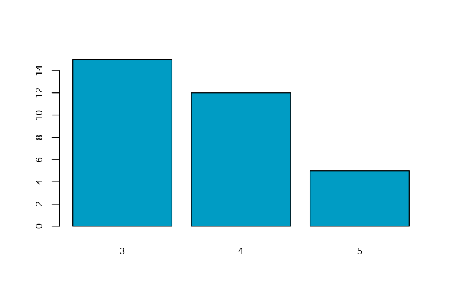
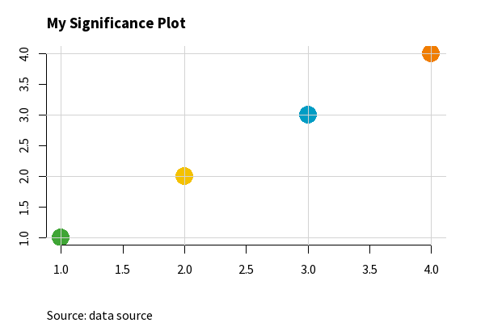
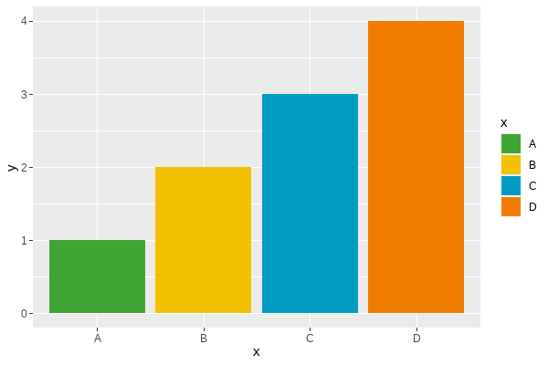
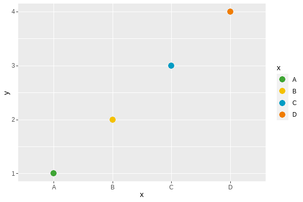
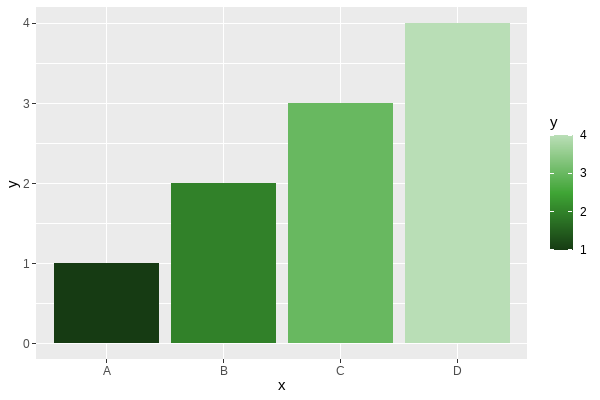
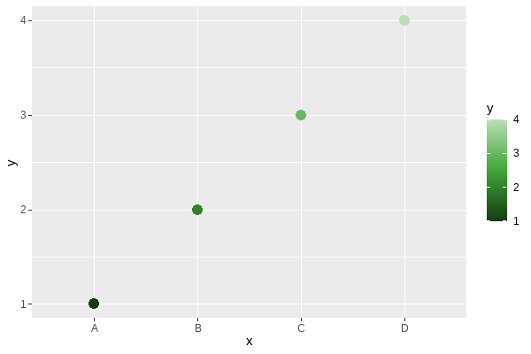
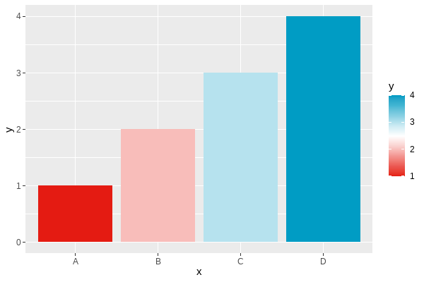
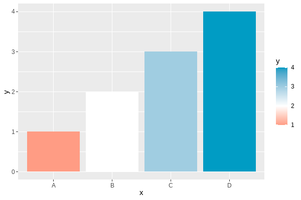
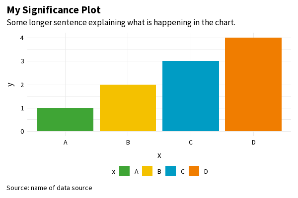

remotes::install_github("nrennie/RSSthemes")Styling charts for RSS publications
This site and its content are in development. The authors welcome feedback. Please either [insert info about raising an issue/PR/email etc.]
Styling charts with different tools
In this section, we discuss the technical details of how to change the style of charts built with some of the most common types of software used to create data visualisations.
R
R (R Core Team 2021) is a programming language which is popular for statistical computing and graphics. There are many packages with R that can be used to create data visualisations, and we don’t aim to cover them all here. Instead, we address the most common methods: built-in base R graphics, and the {ggplot2} package (Wickham 2016).
To help authors with styling their charts to fit in with the guidance in this document, we have developed an R package, {RSSthemes}. We include some examples of using the package here, but encourage readers to check the GitHub repository for any updates.
We aim to add this package to CRAN in the near future, but in the meantime you can install the development version from GitHub:
You can then load the package using:
library(RSSthemes)Base R
R has built-in graphics capabilities that allow users to make a wide range of data visualisations without installing any additional packages. This blog post from Jumping Rivers (“Styling Base r Graphics” 2018) provides instructions on how to style graphics created in base R.
Example: changing bar chart colours in base R.
If all of the bars, lines, points, etc. should have the same colour, you can set the col argument to have one of the RSS colours. The options are: signif_red, signif_blue, signif_green, signif_orange, or signif_yellow.
Code
barplot(table(mtcars$gear), col = signif_blue)
If the colours in your plot are based on values in your data, you can set the default colours using the palette() function. Within {RSSthemes}, the set_rss_palette() function changes the default colours used. There are currently three palettes available in {RSSthemes}, although we hope to add more in the future. The options are signif_qual, signif_div, or signif_seq.
Code
set_rss_palette("signif_qual")
plot(1:4, 1:4, col=1:4, pch=19, cex=3, xlab="", ylab="")
signif_qual palette.Run palette("default") to reset to original base R colours.
Example: changing the styling of base R plots.
Within the plot() function (and related base R plotting functions such as barplot(), and hist()) , there are arguments to control how the non-data elements of the plot look. For example, the family argument changes which font family is used. You can also set many of these arguments globally by calling the par() function. Within {RSSthemes}, there is a function set_signif_par() which sets some default options, including the text alignment and font for all base R plots. We also recommend adding reference lines using the abline() function.
Code
set_signif_par()
plot(1:4, 1:4, col=1:4, pch=19, cex=3, xlab="", ylab="",
main = "My Significance Plot",
sub = "Source: data source")
abline(h=1:4, v=1:4, col = "lightgrey")
set_signif_par().{ggplot2}
{ggplot2} is an R package within the {tidyverse} framework specifically for creating data visualisations. The package documentation provides guidance on how to create different types of charts. Advice on changing the colours and styles of {ggplot2} visualisations, can be found in the ggplot2: Elegant Graphics for Data Analysis book by Hadley Wickham (Wickham 2016).
Let’s set up a basic data set to make some plots with {ggplot2}.
library(ggplot2)
plot_df <- data.frame(x = LETTERS[1:4],
y = 1:4)Example: changing the non-mapped colours in {ggplot2}.
In {ggplot2}, the colour (or color) argument changes the colour that outlines an element, and fill changes the colour that fills the element. If all of the, e.g., bars, lines, or points should have the same colour, you can set either the fill or colour arguments to have one of the RSS colours. The options are: signif_red, signif_blue, signif_green, signif_orange, or signif_yellow.
Code
ggplot(data = plot_df,
mapping = aes(x = x, y = y)) +
geom_col(fill = signif_yellow)
Example: using a discrete colour scale in {ggplot2}.
For working with qualitative (discrete) data, the best palette to use is "signif_qual". This palette currently only contains four colours.
- Discrete (fill) scale:
scale_fill_rss_d()
Code
ggplot(data = plot_df,
mapping = aes(x = x, y = y, fill = x)) +
geom_col() +
scale_fill_rss_d(palette = "signif_qual")
signif_qual.- Discrete (colour) scale:
scale_colour_rss_d()
Code
ggplot(data = plot_df,
mapping = aes(x = x, y = y, colour = x)) +
geom_point(size = 4) +
scale_colour_rss_d(palette = "signif_qual")
signif_qual.Example: using a continuous colour scale in {ggplot2}.
Continuous colour scales may be sequential or diverging. For working with sequential (continuous) data, the best palette to use is "signif_seq".
- Continuous (fill) scale:
scale_fill_rss_c()
Code
ggplot(data = plot_df,
mapping = aes(x = x, y = y, fill = y)) +
geom_col() +
scale_fill_rss_c(palette = "signif_seq")
- Continuous (colour) scale:
scale_colour_rss_c()
Code
ggplot(data = plot_df,
mapping = aes(x = x, y = y, colour = y)) +
geom_point(size = 4) +
scale_colour_rss_c(palette = "signif_seq")
For working with diverging (continuous) data, the best palette to use is "signif_div".
- Continuous (fill) scale:
scale_fill_rss_c()
Code
ggplot(data = plot_df,
mapping = aes(x = x, y = y, fill = y)) +
geom_col() +
scale_fill_rss_c(palette = "signif_div")
If you want to centre the diverging scale around a different value, you can alternatively pass the pre-defined colours from {RSSthemes} into scale_fill_gradient2() in {ggplot2}:
Code
ggplot(data = plot_df,
mapping = aes(x = x, y = y, fill = y)) +
geom_col() +
scale_fill_gradient2(low = signif_red, high = signif_blue, midpoint = 2)
Example: changing the theme in {ggplot2}.
Within {ggplot2}, themes allow you to control the appearance of the non-data elements of your plot. The default theme is theme_grey() which has a darker background. We recommend using a white or transparent background, such as those created with theme_minimal() or theme_bw().
You can also use theme_significance() from {RSSthemes} which additionally sets the plot font to one of those used in Significance magazine. Check that you have already run library(RSSthemes) to ensure the fonts load correctly.
Code
ggplot(data = plot_df,
mapping = aes(x = x, y = y, fill = x)) +
geom_col() +
labs(title = "My Significance Plot",
subtitle = "Some longer sentence explaining what is happening in the chart.",
caption = "Source: name of data source") +
scale_fill_rss_d(palette = "signif_qual") +
theme_significance()
theme_significance().If you find a bug in the {RSSthemes} package, or something that isn’t working quite as you expected, please submit a GitHub issue.
Publication specifications
The following information should be used to design graphs and charts that meet RSS publication requirements. Details include page sizes and column widths, font types and sizes, and image resolutions and file formats.
Significance Magazine
| Page size | (W) 212.55 mm x (H) 263.65 mm |
| Text area | (W) 188 mm x (H) 212 mm |
| Image resolution | 300 dpi (print quality) |
| Recommended image file formats | jpeg, png |
Notebook section
Uses four-column layout.
| 1x column width | 45 mm |
| 2x column width | 93 mm |
| 3x column width | 140 mm |
| 4x column width | 188 mm |
| Body font | Meta Serif OT, Book |
| Font size | 8.5 pt |
| Section colour | Red:
|
Features section
Uses three-column layout.
| 1x column width | 60 mm |
| 2x column width | 124 mm |
| 3x column width | 188 mm |
| Body font | Source Sans Pro, Regular |
| Font size | 9 pt |
| Section colour | Green:
|
Profiles / Perspectives / Statscom section
Uses three-column layout.
| 1x column width | 60 mm |
| 2x column width | 124 mm |
| 3x column width | 188 mm |
| Body font | Meta Serif OT, Book |
| Font size | 8.5 pt |
| Section colours: | |
| Profiles | Blue:
|
| Perspectives | Yellow:
|
| Statscomm | Orange:
|
Journal of the Royal Statistical Society Series A
Uses a single-column layout.
| Page size | (W) 189 mm x (H) 246 mm |
| Text area | (W) 136 mm x (H) 217 mm |
| Body font | Sabon LT Std Roman |
| Font size | 9.25 pt |
| Image resolution | 300 dpi (print quality) |
| Recommended image file formats | jpeg, png |
References
R Core Team. 2021. R: A Language and Environment for Statistical Computing. Vienna, Austria: R Foundation for Statistical Computing. https://www.R-project.org/.
“Styling Base r Graphics.” 2018. Jumping Rivers. 2018. https://www.jumpingrivers.com/blog/styling-base-r-graphics/.
Wickham, Hadley. 2016. Ggplot2: Elegant Graphics for Data Analysis. Springer-Verlag New York. https://ggplot2.tidyverse.org.